Non-relative edge label positioning
JGraphX Version 3.7.5 – 28. August 2017
Copyright (c) JGraph Ltd 2006-2017
All rights reserved. No part of this publication may be reproduced, stored in a retrieval system, or transmitted in any form or by any means, electronic, mechanical, photocopying, recording or otherwise, without the prior written permission of the author.
The programs in this book have been included for their instructional value. They have been tested with care but are not guaranteed for any particular purpose. The publisher does not offer any warranties or representations nor does it accept any liabilities with respect to the programs.
Possession, use, or copying of the software described in this publication is authorized only pursuant to a valid written license from JGraph Ltd.
Neither JGraph Ltd. nor its employees are responsible for any errors that may appear in this publication. The information in this publication is subject to change without notice.
Java and all Java-based marks are trademarks or registered trademarks of Sun Microsystems, Inc. in the U.S. and other countries.
mxGraph is a product family of libraries, written in a variety of technologies, that provide features aimed at applications that display interactive diagrams and graphs. Note by graphs we mean mathematical graphs, not necessarily charts (although some charts are graphs). See later section “What is a Graph?” for more details.
Being a developer library, mxGraph is not designed specifically to provide a ready to use application, although many of the examples are close to being usable applications. mxGraph provides all the commonly required functionality to draw, interact with and associate a context with a diagram displayed in the technology of that particular mxGraph flavour. mxGraph comes with a number of examples that help explain how a basic application is put together using each technology and showcases individual features of the library.
Each user manual is specific to one technology, along with generic sections, such as this introduction and layouts. Developers will find the implementations of each library in the different technologies share the same architecture and API across the product range. The implementations differ slightly for technology-specific areas, usually event handling and rendering, but when overall porting from one technology, mxGraph is designed to present as common an interface as is possible.
mxGraph, at the time of writing, has a commercial release grade JavaScript library, a release grade Java Swing visualization library (JGraphX), a beta grade ActionScript (for Flex/Flash applications) and alpha grade .NET visualization components. Do not confuse the visualization elements (the part you see on the client) with the core model elements. The core models written in Java and .NET that serve as back-end server classes in the JavaScript library versions are all commercial-grade production code.
Developers integrating the library in their application should read the pre-requisites for the technology they are using. See section “Pre-requisites” below. Given that mxGraph is a component part of your application, you must understand how applications are constructed in that technology and how to program in the language(s) of that technology.
When deciding which of the technology implementations of mxGraph to use, often the choice is determined by the technology of the application.
The Java visualization version is suitable for producing desktop applications with high performance. The web-centric version, written in JavaScript, is designed to work natively in all major web browsers. An example of such an application is a business process modelling tool that enables users to draw processes in a web browser, store them centrally, allow other users to view and edit processes and automatically execute the process on the server using business logic associated with the visual information.
The JavaScript version of mxGraph mainly comprises one JavaScript file that contains all of the mxGraph functionality. This is loaded into a HTML web page in a JavaScript section and executes in an HTML container in the browser. This is an incredibly simple architecture that only requires a web server capable of serving html pages and a JavaScript enabled web browser.
The key advantages of this technology are:
The key disadvantage of this technology is:
Comparing the pros and cons of each implementation against your application requirements usually provides a clearly advantage to using one of these technologies.
This user manual is for the Java Swing library version of mxGraph. This version is called JGraphX, the reason for this being the authors of mxGraph have a long standing product called JGraph. The last version of JGraph in the previous architecture was JGraph 5. Because all mxGraph product have a common API, a version numbering was required that was consistent across the product range. Thus, the Java flavour of mxGraph is called JGraphX and starts from version 1.x, but think of it as JGraph 6 if that is easier. JGraphX enables you to produce Java Swing applications that feature interactive diagramming functionality. The core client functionality of JGraphX is a Java 5 compliable library that describes, displays and interacts with diagrams as part of your larger Java Swing application. JGraphX is primarily designed for use in a desktop environment, although Java does have web enabling features making it possible to deploy JGraphX in web environment.
Note: From now on the term mxGraph will be used to describe the Java client, rather than any other flavour of the product, unless otherwise specified. The package name of JGraphX is com.mxgraph.* and the main class mxGraph, in common with the other flavours of mxGraph.
Example applications for a graph visualization library include: process diagrams, workflow and BPM visualization, flowcharts, traffic or water flow, database and WWW visualization, networks and telecommunications displays, mapping applications and GIS, UML diagrams, electronic circuits, VLSI, CAD, financial and social networks, data mining, biochemistry, ecological cycles, entity and cause-effect relationships and organisational charts.
JGraphX is licensed under the modern, 3 clause BSD license. The precise text of the license you receive the software under is here. If you cannot understand it, do not use the software.
For detailed licensing questions you are always advised to consult a legal professional.
Graph visualization is based on the mathematical theory of networks, graph theory. If you're seeking JavaScript bar charts, pie charts, Gantt charts, have a look at the JFreeChart project instead, or similar
A graph consists of vertices, also called nodes, and of edges (the connecting lines between the nodes). Exactly how a graph appears visually is not defined in graph theory. The term cell will be used throughout this manual to describe an element of a graph, either edges, vertices or groups.
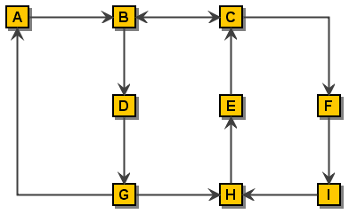
A simple Graph
There are additional definitions in graph theory that provide useful background when dealing with graphs, they are listed in the Appendices if of interest to you.
Visualization is the process of creating a useful visual representation of a graph. The scope of visualization functionality is one of JGraphX's main strength. JGraphX supports a wide range of features to enable the display of cells to only be limited by the skill of the developer and the Swing platform. Vertices may be shapes, images, vector drawings, animations, virtually any graphical operations available in Swing. You can also use HTML mark-up in text labels.
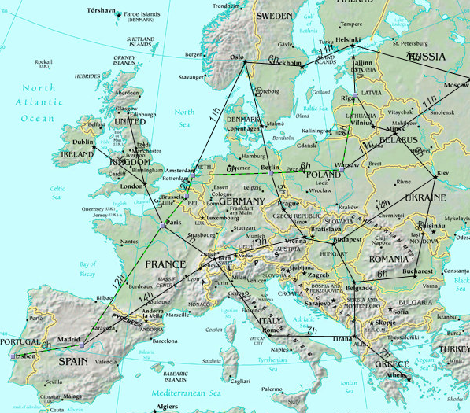
Graph Visualization of a transport system. (c) Tourizm Maps
2003, http://www.world-maps.co.uk
Interaction is the way in which an application using JGraphX can alter the graph model through the web application GUI. JGraphX supports dragging and cloning cells, re-sizing and re-shaping, connecting and disconnecting, drag and dropping from external sources, editing cell labels in-place and more. One of the key benefits of JGraphX is the flexibility of how interaction can be programmed.
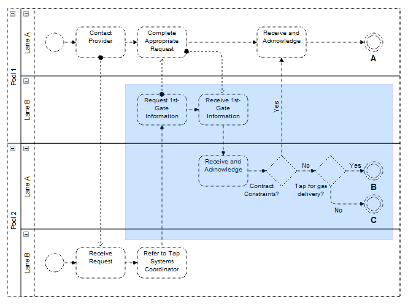
Selection shading while selecting an area through mouse drag
Graph cells can be drawn anywhere in a simple application, including on top of one another. Certain applications need to present their information in a generally ordered, or specifically ordered structure. This might involve ensuring cells do not overlap and stay at least a certain distance from one another, or that cells appear in specific positions relative to other cells, usually the cells they are connected to by edges. This activity, called the layout application, can be used in a number of ways to assist users in setting out their graph. For non-editable graphs, layout application is the process of applying a layout algorithm to the cells. For interactive graphs, meaning those that can be edited through the UI, layout application might involve only allowing users to make changes to certain cells in certain positions, to re-apply the layout algorithm after each change to the graph, or to apply the layout when editing is complete.
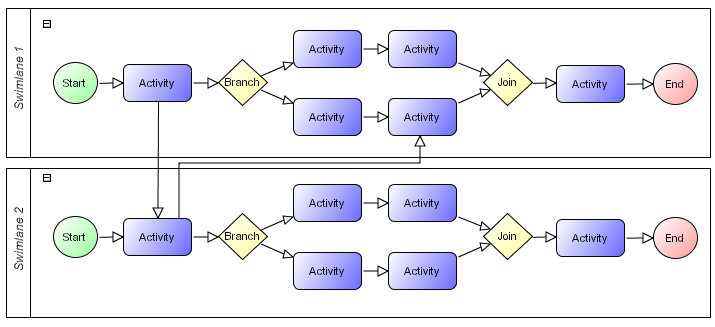
Layout of a workflow using a horizontal hierarchical layout
JGraphX supports a range of tree, force-directed and hierarchical layouts which will fit most layout needs. See the later section on using the layouts for more information.
Analysis of graphs involves the application of algorithms determining certain details about the graph structure, for example, determining all routes or the shortest path between two cells. There are more complex graph analysis algorithms, these being often applied in domain specific tasks. Techniques such as clustering, decomposition, and optimization tend to be targeted at certain fields of science and have not been implemented in the core JGraphX packages at the current time of writing.
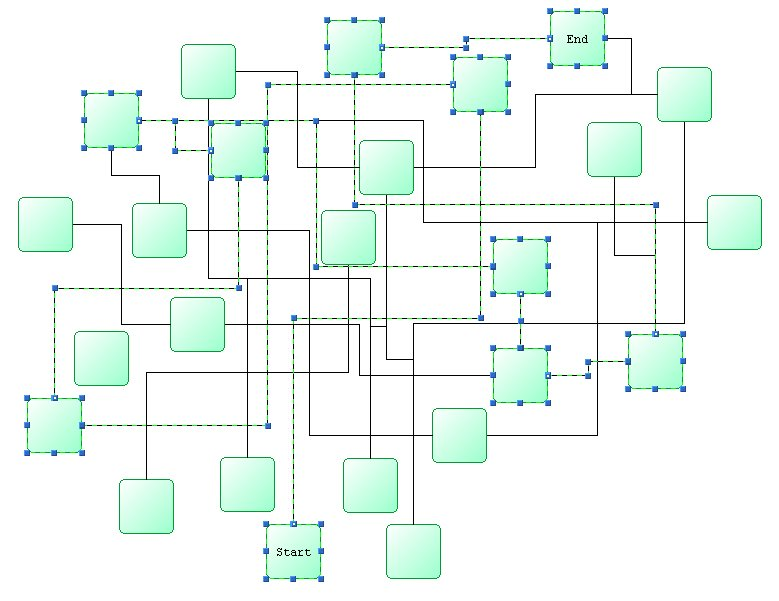
Shortest Path Analysis
To benefit fully from this manual you will need to have a reasonable understanding of Java and at least a high-level overview of Swing. If you lack experience with programming the Java language, there are many good books on the subject available. A useful free introduction is the Sun Java Tutorial.
There is a 'jgraphx' tag on Stackoverflow, but please ensure you understand the SO FAQ prior to posting. To post on SO you must 1) have a question , 2) that question be programming related and 3) use the 'jgraphx' tag.
To start, navigate to the JGraphX project on Github. The README on this page answers the high level FAQ type questions about the project.
Once you have the project source locally you will be presented with a number of files and directories in the root of the install.
|
/doc |
Documentation root, includes this user manual |
|
/src |
Source of the library |
|
/lib |
Contains pre-built jar of the library. |
|
/examples |
Examples demonstrating the use of JGraphX |
|
license.txt |
The licensing terms under which you must use the library |
Table: Project Directory Structure
The mxGraph model is the core model that describes the structure of the graph, the class is called mxGraphModel and is found within the model package. Additions, changes and removals to and from the graph structure take place through the graph model API. The model also provides methods to determine the structure of the graph, as well as offering methods to set visual states such as visibility, grouping and style.
However, although the transactions to the model are stored on the model, JGraphX is designed in such a way that the main public API is through the mxGraph class. The concept of “add this cell to the graph” is a more natural description of the action than “add this cell to the model of the graph”. Where it is intuitive, method available on the model and cells are duplicated on the graph and those methods on the graph class are considered the main public API. Throughout the rest of this manual these key API methods are given a pink background:
anExampleCoreAPIMethod()
So, though many of the main API calls are through the mxGraph class, keep in mind that mxGraphModel is the underlying object that stores the data structure of your graph.
JGraphX uses a transactional system for making changes to the model. In the HelloWorld example we saw this code:
// Adds cells to the model in a single step
graph.getModel().beginUpdate();
try
{
Object v1 = graph.insertVertex(parent, null, "Hello,", 20, 20, 80, 30);
Object v2 = graph.insertVertex(parent, null, "World!", 200, 150, 80, 30);
Object e1 = graph.insertEdge(parent, null, "", v1, v2);
}
finally
{
// Updates the display
graph.getModel().endUpdate();
}
to perform the insertion of the 2 vertices and 1 edge. For each change to the model you make a call to beginUpdate(), make the appropriate calls to change the model, then call endUpdate() to finalize the changes and have the change event notifications sent out.
Key API Methods:
Note – Technically you do not have to surround your changes with the begin and end update calls. Changes made outside of this update scope take immediate effect and send out the notifications immediately. In fact, changes within the update scope enact on the model straight away, the update scope is there to control the timing and concatenation of event notifications. Unless the update wrapping causes code aesthetic issues, it is worth using it by habit to avoid possible problems with event and undo granularity.
Note the way in which the model changes are wrapped in a try block and the endUpdate() in a finally block. This ensures the update is completed, even if there is an error in the model changes. You should use this pattern wherever you perform model changes for ease of debugging.
Ignore the reference to the parent cell for now, that will be explained later in this chapter.
The sub-transaction in the blue block above refers to the fact that transactions can be nested. That is, there is a counter in the model that increments for every beginUpdate call and decrements for every endUpdate call. After increasing to at least 1, when this count reaches 0 again, the model transaction is considered complete and the event notifications of the model change are fired.
This means that every sub-contained section of code can (and should) be surrounded by the begin/end combination. This provide the ability in JGraphX to create separate transactions that be used as “library transactions”, the ability to create compound changes and for one set of events to be fired for all the changes and only one undo created. Automatic layouting is a good example of where the functionality is required.
In automatic layouting, the user makes changes to the graph, usually through the user interface, and the application automatically positions the result according to some rules. The automatic positioning, the layouting, is a self-contained algorithm between begin/end update calls that has no knowledge of the specifics of the change. Because all changes within the begin/end update are made directly to the graph model, the layout can act upon the state of the model as the change is in progress.
It is important to distinguish between functionality that acts on the graph model as part of a compound change and functionality that reacts to atomic graph change events. In the first case, such as for automatic layouting, the functionality takes the model as-is and acts upon it. This method should only be used for parts of compound model changes. All other parts of the application should only react to model change events.
Model change events are fired when the last endUpdate call reduces the counter back down to 0 and indicate that at least one atomic graph change has occurred. The change event contains complete information as to what has altered (see later section on Events for more details).
Below is a list of the methods that alter the graph model and should be placed, directly or indirectly, with the scope of an update:
Initially, we will just concern ourselves with the add and remove, as well as the geometry and style editing methods. Note that these are not core API methods, as usual these methods are on the mxGraph class, where appropriate, and they perform the update encapsulation for you.
Design Background - Some people are confused by the presence of visual information being stored by the model. These attributes comprise cell positioning, visibility and collapsed state. The model stores the default state of these attributes, providing a common place to set them on a per-cell basis, whereas, views can override the values on a per-view basis. The model is simply the first common place in the architecture where these attributes can be set on a global basis. Remember, this is a graph visualization library, the visualization part is the core functionality.
The three graph cells created in the HelloWorld
application are two vertices and one edge connecting the vertices. If
you are not familiar with basic graph theory and its terminology, please
see the wikipedia
entry.
You can add vertices and edges using the add() method on the model. However, for the purposes of general usage of this library, learn that mxGraph.insertVertex() and mxGraph.insertEdge() are the core public API for adding cells. The method of the model requires that the cell to be added is already created, whereas the mxGraph.insertVertex() creates the cell for you.
Core API methods:
mxGraph.insertVertex() will create an mxCell object
and return it from the method used. The parameters of the method are:
graph.getDefaultParent();
as your default parent, as used in the HelloWorld example.With the edge addition method, the identically named parameters perform the same method as in the vertex addition method. The source and target parameters define the vertices to which the edge is connected. Note that the source and target vertices should already have been inserted into the model.
mxCell is the cell object for both vertices and edges. mxCell duplicates many of the methods available in the model. The key difference in usage is that using the model methods creates the appropriate event notifications and undo, using the cell makes the change but there is no record of the change. This can be useful for temporary visual effects such as animations or changes on a mouse over, for example. As a general rule though, use the model editing API unless you encounter a specific problem with this mechanism.
When creating a new cell, three things are required in the constructor, a value (user object), a geometry and a style. We will now explore these 3 concepts before returning to the cell.
The concept of styles and stylesheets in conceptually similar to CSS stylesheets. Open up the util.mxConstants.js file in your editor and search for the first match on “STYLE_”. If you scroll down you will see a large number of strings defined for all the various styles available with this prefix. Some of styles apply to vertices, some to edges and some to both. As you can see, these define visual attributes on the element they act upon.
The mxStylesheet holds one object, styles, which is a hashtable mapping style names to an array of styles:
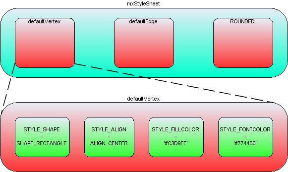
Style arrays within the styles collection
In the above image the blue box represents the styles hashtable in mxStyleSheet. The string 'defaultVertex' is the key to an array of string/value pairs, which are the actual styles. Note that JGraphX creates two default styles, one for vertices and one for edges. If you look back to the helloworld example, no style was passed into the optional style parameter of insertVertex or insertEdge. In this case the default style would be used for those cells.
If you wanted to specify a style other than the default for a cell, you must pass that new style either to the cell when it is created (mxGraph's insertVertex and insertEdge both have an optional parameter for this) or pass that style to the cell using model.setStyle().
The style that you pass has the form stylename. ,note that the stylenames and key/value pairs may be in any order. Below are examples to demonstrate this concept, adapting the insertVertex call we saw in helloworld:
A new style called 'ROUNDED' has been created, to apply this to a vertex:
Object v1 = graph.insertVertex(parent, null, "Hello", 20, 20, 80, 30, "ROUNDED");
To create a new vertex with the ROUNDED style, overriding the stroke and fill colors:
Object v1 = graph.insertVertex(parent, null, "Hello", 20, 20, 80, 30, "ROUNDED;strokeColor=red;fillColor=green");
To create a new vertex with no global style, but with local stroke and fill colors:
Object v1 = graph.insertVertex(parent, null, "Hello", 20, 20, 80, 30, ";strokeColor=red;fillColor=green");
To create a vertex that uses the defaultVertex style, but a local value of the fill color:
Object v1 = graph.insertVertex(parent, null, "Hello", 20, 20, 80, 30, "defaultVertex;fillColor=blue");
Note that default style must be explicitly named in this case, missing the style out sets no global style on the cell when the semi-colon starts the string. If the string starts with no semi-colon, the default style is used.
Again, the mxGraph class provides utility methods that form the core API for accessing and changing the styles of cells:
Core API methods:
To create the ROUNDED global style described above, you can follow this template to create a style and register it with mxStyleSheet:
mxStylesheet stylesheet = graph.getStylesheet();
Hashtable<String, Object> style = new Hashtable<String, Object>();
style.put(mxConstants.STYLE_SHAPE, mxConstants.SHAPE_RECTANGLE);
style.put(mxConstants.STYLE_OPACITY, 50);
style.put(mxConstants.STYLE_FONTCOLOR, "#774400");
stylesheet.putCellStyle("ROUNDED", style);
In the helloworld example you can see the position and size of the vertices passed into the insertVertex method. The coordinate system in Java is x is positive to the right and y is positive downwards, and in terms of the graph, the positioning is absolute to the container within which the mxGraph is placed.
The reason for a separate mxGeometry class, as opposed to simply having the mxRectangle class store this information, is that the edges also have geometry information.
The width and height values are ignored for edges and the x and y values relate to the positioning of the edge label. In addition, edges have the concept of control points. These are intermediate points along the edge that the edge is drawn as passing through. The use of control points is sometimes referred to as edge routing.
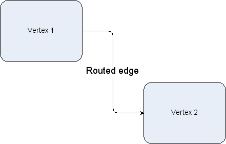
An edge routed by 2 control points
There are two more important additional concepts in geometry, relative positioning and offsets
By default, the x and y position of a vertex is the offset of the top left point of the bounding rectangle of the parent to the top left point of the bounding rectangle of the cell itself. The concept of parents and groups is discussed later in this chapter, but without going into too much detail, if a cell does not have cell parent, the graph container is its parent for positioning purposes.
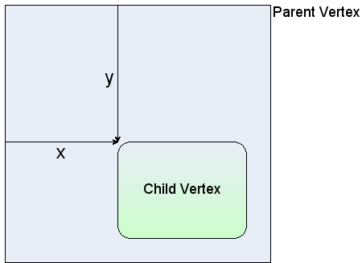
Non-relative vertex positioning
For an edge, in non-relative mode, which is the default mode, the edge label position is the absolute offset from the graph origin.
Non-relative edge label positioning
For vertices in relative mode, (x,y) is the proportion along the parent cell's (width, height) where the cell's origin lies. (0,0) is the same origin as the parent, (1,1) places the origin at the bottom right corner of the parent. The same relative positioning extends below 0 and above 1 for both dimensions. This positioning is useful for keeping child cells fixed relative to the overall parent cell size.
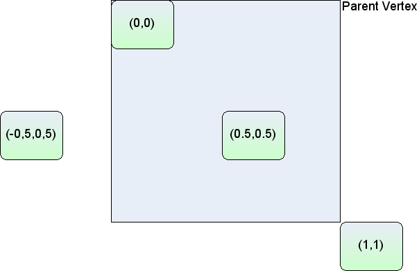
Relative vertex positions
Lastly, edge labels in relative mode are palced based on the positioning from the center of the edge. The x-coordinate is the relative distance from the source end of the edge, at -1, to the target end of the edge, at 1. The y co-ordinate is the pixel offset orthogonal from the edge. The diagram below shows the values of x,y for various edge labels in relative mode. Note that for a straight edge, the calculations are simple. For edges with multiple control points, the edge has to be traced along its segments (a segment being the line between end points and/or control points) to find the correct distance along the edge. The y value is the orthogonal offset from that segment.
Switching relative positioning on for edge labels is a common preference for applications. Navigate to the mxGraph.insertEdge() method in mxGraph, you will see this calls createEdge(). In createEdge() the geometry is set relative for every edge created using this prototype. This is partly the reason for the amount of helper methods in mxGraph, they enable easy changing of the default behaviour. You should try to use the mxGraph class API as much as possible to provide this benefit in your applications.
The offset field in mxGeometry is an absolute x,y offset applied to the cell label. In the case of edge labels, the offset is always applied after the edge label has been calculated according to the relative flag in the above section.
Core API methods:
The User object is what gives JGraphX diagrams a context, it stores the business logic associated with a visual cell. In the HelloWorld example the user object has just been a string, in this case it simply represents the label that will be displayed for that cell. In more complex applications, these user objects will be objects instead. Some attribute of that object will generally be the label that the visual cell will display, the rest of the object describes logic relating to the application domain.
Using the example of a simple workflow or process application, say we have the graph below:
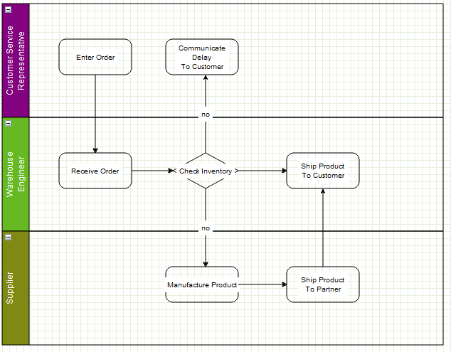
A simple workflow
Say the user right clicked and selected properties of the “Check Inventory” diamond, they might see this dialog:
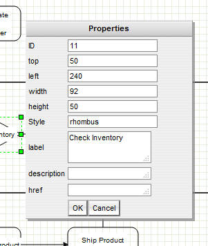
The properties of a vertex
These properties show the geometry, label, ID etc, but a dialog could just as easily show the user object of the cell. There might be a reference to some process on the workflow engine as to how the inventory is actually checked. This might be an application specific mechanism for both the server and client to assign some identification to remote method calls. Another value might be the type of object that process returned, maybe a boolean or an integer to indicate stock level in this case. Given that return type, it is possible to enforce constraints with the diagram and provide visual alerts of if, say, the outgoing edges decision check does not correspond to the return type of the vertex.
Next, as an example, the user objects of the outgoing edges might contain a label and a boolean state. Again, the JGraphX-based editor might provide the means to alter the boolean value. When executing the process, it might follow the edges that correspond to the boolean value returned by the decision node.
Keep in mind that the above example is very domain specific, it is there to explain how the user object maps to the business logic of the application. It visualizes how JGraphX creates what we term a contextual graph. The context is formed by the connections between vertices and the business logic stored within the user objects. A typical application receives the visual and business logic from a sever, may allow editing of both, then transmits both back to the server for persistence and/or execution.
As described previously, mxGraph is the primary API for using this library and the same concept applies to cells. One basic state of the cell not exposed on the graph is whether a cell is a vertex or an edge, this call be performed on the cell or on the model.
There are two boolean flags on mxCell, vertex and edge, and the helper methods set one of these to true when the cell is created. isVertex(), isEdge() on mxIGraphModel are what the model uses to determine a cell's type, there are not separate objects for either type. Technically, it is possible to switch the type of a cell at runtime, but take care to invalidate the cell state (see later section) after changing the type. Also, be aware that the geometry object variable means different things to vertices and edges. Generally, it is not recommended to change a cell type at runtime.
Grouping, within JGraphX, is the concept of logically associating cells with one another. This is commonly referred to as the concept of sub-graphs in many graph toolkits. Grouping involves one or more vertices or edges becoming children of a parent vertex or edge (usually a vertex) in the graph model data structure. Grouping allows JGraphX to provide a number of useful features:
In grouping, cells are assigned a parent cell. In the simplest case, all cells have the default parent as their parent. The default parent is an invisible cell with the same bounds as the graph. This is the cell returned by graph.getDefaultParent() in the helloworld example. The x,y position of a vertex is its position relative to its parent, so in the case of default grouping (all cells sharing the default parent) the cell positioning is also the absolute co-ordinates on the graph component. In the case all cells being added to the default root, the group structure logically looks like, in the case of the helloworld example, the diagram below.
Note the addition of the Layer 0 cell, this is the default indirection in the group structure that allows layer changes with the requirement of additional cells. We include it below for correctness, but in later group diagrams it will be omitted.
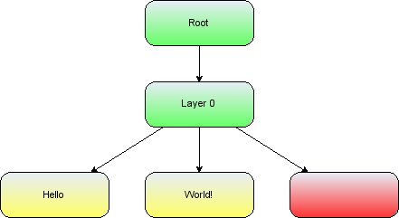
The group structure of the helloworld example
Also, note that the position of the edge label (x,y in geometry) is relative to the parent cell.
If we go back to the simple workflow example in the User Objects section, we can see what grouping might look like visually. In the example the group cells represent people and the child vertices represent tasks assigned to those people. In this example the logical group structure looks like this:
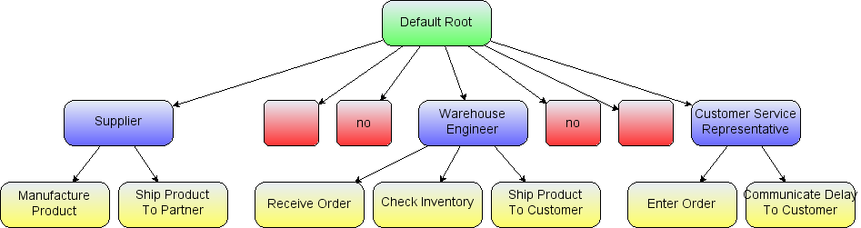
The logical group structure of the workflow example
The workflow action vertices are the yellow children and the swimlane group vertices are marked blue.
Inserting cells into the group structure is achieved using the parent parameter of the insertVertex and insertEdge methods on the mxGraph class. These methods set the parent cell on the child accordingly and, importantly, informs the parent cell of its new child.
Altering the group structure is performed via the mxGraph.groupCells() and mxGraph.ungroupCells() methods.
Core API methods:
There are two primary reasons to control the number of cells displayed at any one time. The first is performance, drawing more and more cells will reach performance usability limits at some point on any platform. The second reason is ease of use, a human can only comprehend a certain amount of information. All of the concepts associated with grouping, listed above, can be used to reduce the complexity of information on the screen for the user.
Folding is the collective term we use for expanding and collapsing groups. We say a cell is folded by making it's child vertices invisible. There are a number of methods relating to this feature:
Core API method:
Folding related methods:
mxGraph.isCellFoldable(cell, collapse) – By default true for cells with children.
mxGraph.isCellCollapsed(cell) – Returns the folded state of the cell
When a group cell is collapsed, three things occur by default:

Expanded swimlane
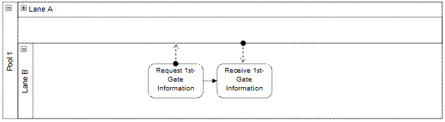
Collapsed Swimlane
The above two images demonstrate these three concepts. In its expanded state the upper group cell displays a small box in the top left hand corner with a “-” character inside. This indicates that clicking on this box collapses the group cell. Doing this we get the bottom image where the group cell takes on its collapsed size. Child vertices and edge that do not leave the group cell are made invisible. Finally, edges that exit the group cell are promoted to appear to be connected to the collapsed group cell. Clicking on the “+” character that now appears within the box expands the group cell and brings it back to its original state of the top image.
Using the mxGraph.foldCells() function, you can achieve the same result programmatically as clicking on the expand/collapse symbols. One common usage of this is when the application zooms out a specific amount, clusters of cells are grouped and the grouped cell collapsed (very often without the “-” box since the application is controlling the folding). This way fewer, larger cells are visible to the user, each one representing their children cells logically. You might then provide a mechanism to zoom into a group, which expands it in the process. You might also provide drill-down/step-up, explained next.
Sometimes, as an alternative to expand/collapse, or possibly in combination with it, your graph will be composed of a number of graphs, nested into a hierarchy. Below we see a simple example:
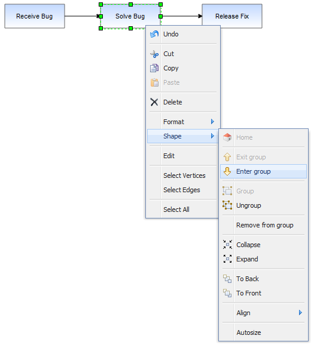
An example top level workflow
This simple workflow consists of three high level steps. Obviously, the individual steps contain a number of sub-steps and we will look at a sub-graph of the Solve Bug cell.
Under the Solve Bug vertex we have created a number of children to represent the process of solving a bug in more detail, in this case the process of solving a bug on the Starship Enterprise.
In this example, which uses the GraphEditor example, the menu option shown selected in the above image invokes mxGraph.enterGroup(cell), which is one of the pair of core API functions for sub-graphs.
Core API methods:
The root cell of the graph has been, up to now, the default parent vertex to all first-level cells. Using these functions you can make any group cell in the group structure the root cell, so that the children of that parent appear in the display as the complete graph.
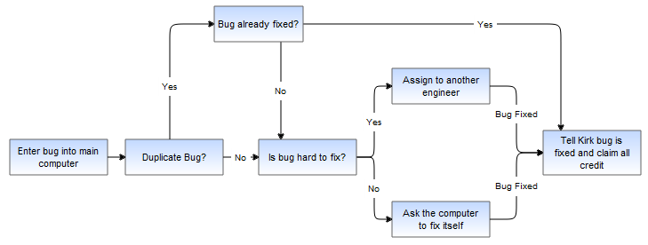
Result of drilling down into the Solve Bug vertex
The same graph expanded using folding instead looks like:
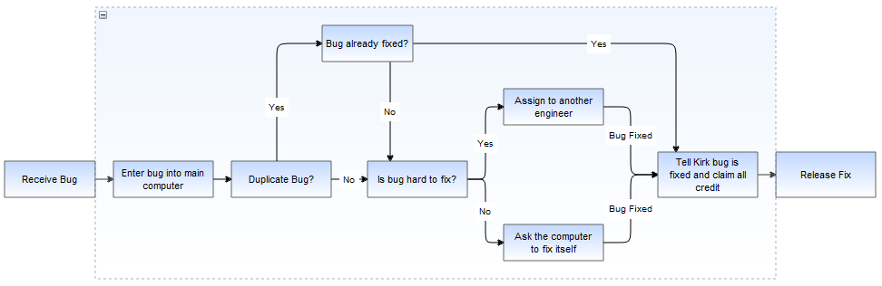
Exiting the group using the shape->exit group option, which invokes mxGraph.exitGroup, brings you back to the original 3 vertex top level graph.
In JGraphX, like many graphical applications, there is the concept of z-order. That is, the order of objects as you look into the screen direction. Objects can be behind or in front of other objects and if they overlap and are opaque then the back-most object will be partially or complete obscured. Look back to the graph structure of HelloWorld illustration above. Children cells are stored under parents in a deterministic order (by default the order in which you add them).
If we move the cells in the HelloWorld example we see the following result:
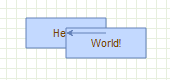
Overlapped vertices
It can be seen that the World vertex is in front of the Hello vertex. This is because the World vertex has a higher child index than the Hello vertex, at positions 1 and 0 respectively in the ordered collection that holds the children of the root cell.
To change order we use mxGraph.orderCells.
Core API method:
A sibling cell in JGraphX is any cell that shares the same parent. So by invoking this on the Hello vertex it would then overlap the World Vertex.
Ordering and grouping can be extended to form logically layered groups. The cells are drawn via a depth-first search. Take the HelloWorld example again and imagine that both the Hello and World vertices have some hierarchy of children underneath them. The Hello vertex and all of its children will be drawn before the World vertex or any of its children. If Hello and World were invisible group cells you then have two hierarchies of cells, one being drawn entirely before the other. You can also switch the order of the hierarchies by simply switching the order of the invisible group cells.
In filtering cells with some particular attribute are displayed. One option to provide filtering functionality is to check some state before rendering the cells. Another method, if the filtering conditions are simple and known in advance, is to assign filterable cells by groups. Making the groups visible and invisible performs this filtering operation.
Within the core JGraphX library, by that we mean we exclude the editor functionality, which provides application level features, there are a number of mechanisms to define the appearance of cells. These split into vertex customizations and edge customizations
Stencils are sets of pre-defined vector shapes that can be added at run-time to JGraphX without the requirement to programmatically define how they are drawn. Instead, they are defined using using SVG. The entire format for describing shapes is based on the shape format used by the Dia diagramming software. This gives access to the stencils already available from that tool and encourages a common, standardised format, rather than creating yet-another custom format.
The Dia shape format describes two files per shape, a .PNG image of the shape and the XML .shape description file. You can obtain a zip of the stencils shipped with the Dia application here. Unzip the file and you will find within a number of directories containing shape/PNG pairs, the directories forming what we refer to as "stencils", the set of shapes.
Stencils can be seen in practice using the GraphEditor example that ships with JGraphX. Under the main menu select File->Import Stencil and navigate to the location you unzipped the downloaded shapes and perform a directory selection to load all of the shapes within that directory. These shapes can be dragged and dropped onto the graph and behave like a standard vertex for all operations performed on them. Note that the Dia shapes are licensed under the terms of the GPL version 3. This does not affect the licensing of any software displaying the shapes, it simply means that you must allow users to view the XML the shapes are defined in and any shapes derived from these shapes, if they request it.
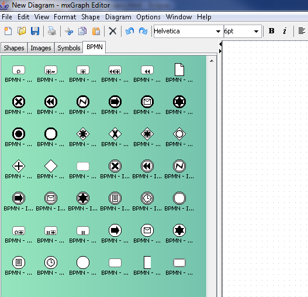
A stencil set loaded into the GraphEditor Library
com.mxgraph.examples.swing.editor.EditorActions.ImportAction
provides the example addStencilShape method for registering new
stencil shapes and adding them to a palette. The second parameter to this
method, nodeXml is the XML as obtained from the .shape file.
You could add a single shape to the shape registry using:
String nodeXml = mxUtils.readFile(fc.getSelectedFile().getAbsolutePath()); String name = ImportAction.addStencilShape(null, nodeXml, null);
Where fc is a FileChooser. This parses, stores and registers the
.shape selected. The name under which it is registered matches the name
element obtained from that .shape file. So if that name were BPMN-Gateway,
for example, adding:
shape=BPMN-Gateway
to the style string of a vertex or:
style.put(mxConstants.STYLE_SHAPE, "BPMN-Gateway");
to the style map of a vertex, would cause that vertex to be rendered
according the SVG in that .shape file. If you wanted to add a complete
set of shapes, a stencil set, then generally you would add the set to
a palette at the time of import. com.mxgraph.examples.swing.editor.BasicGraphEditor
under the examples package, provides the insertPalette(String title)
method. Thus:
EditorPalette palette = editor.insertPalette(fc.getSelectedFile().getName());where fc is a
FileChooser provides the palette to pass to:
for (File f : fc.getSelectedFile().listFiles(
new FilenameFilter()
{
public boolean accept(File dir,
String name)
{
return name.toLowerCase().endsWith(
".shape");
}
}))
{
String nodeXml = mxUtils.readFile(f.getAbsolutePath());
ImportAction.addStencilShape(palette, nodeXml, f.getParent() + File.separator);
}
Where we iterate through each .shape file within a directory selection
and call addStencilShape passing in the collective palette,
the string XML of the .shape file and the path to that directory, the path
being used to obtain the .PNG files that will be used as the icons displayed
in the palette. This code can be seen in practice (the code invoked by
Import Stencil on Graph Editor) in
com.mxgraph.examples.swing.editor.EditorActions.ImportAction within
the actionPerformed method.
If you want a graphical method to create new shapes, currently this is only possible using the Dia tool itself. The JGraphX roadmap includes the deployment of an online tool to create custom shapes easily, however.